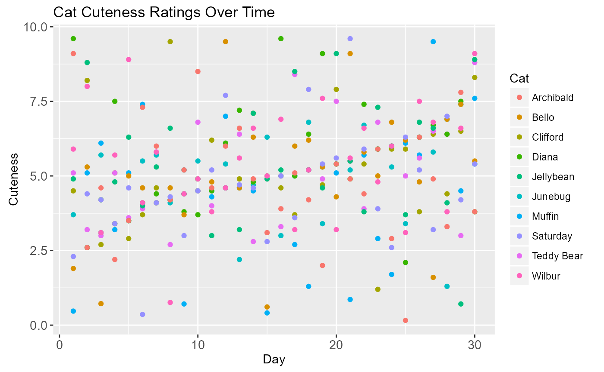

Introduction
This quick start guide introduces you to animint2 in a
way that I hope is both brief and friendly. It assumes nothing except
some basic knowledge of R and some familiarity with data visualizations
and statistics. Some familiarity with ggplot2 is helpful
but unnecessary. After reading this, you’ll have a general understanding
of how animint2 works. You’ll also know how to generate
basic interactive data visualizations, sometimes referred to as
“animints.” Depending on how sophisticated you want your animints to be,
this Quick Start Guide may be all you need.
This guide includes examples of relatively simple animints.
animint2 is also capable of generating larger and more
complex data visualizations. For examples, take a look at chapters 8
through 18 of the animint2
Manual or at the animint
gallery.
The data used in this guide are simulated, which is a fancy way of saying that I forced a computer to make them up. The data are about cats. Here’s a glimpse:
head(meowtrics)## Day Cat Coolness Cuteness
## 1 1 Clifford 0.16 4.50
## 2 1 Junebug 0.36 3.70
## 3 1 Muffin 0.41 0.47
## 4 1 Teddy Bear 0.47 5.10
## 5 1 Diana 0.61 9.60
## 6 1 Bello 0.71 1.90Anatomy of a Data Visualization
A data visualization is composed of parts arranged in a certain way.
This is often referred to as the grammar of graphics. This quick start
guide won’t teach you the grammar, and you don’t need to know it to get
started with animint2. What you do need to know is that
animint2’s (and ggplot’s) syntax is modeled on
the grammar.
As an example, let’s load animint2 and look at a static
graph it produces. It’s about perceptions of cat cuteness over time and
uses data from 10 different housecats.
library(animint2)
cute_1 <- meowtrics |> #1
ggplot() + #2
geom_point() + #3
aes(x = Day, y = Cuteness, group = Cat, color = Cat) + #4
labs(title = "Cat Cuteness Ratings Over Time") #5
cute_1
What’s happening with the code here?
- #1
-
I begin with the dataset, called
meowtrics. - #2
-
I pipe it into
ggplot(), which tellsanimint2that I’m creating a data visualization. - #3
-
I declare that it’s a scatterplot using
geom_point(). - #4
-
I draw the axes of the graph with
aes(). I place the time category in the x-axis and the cuteness ratings in the y-axis (thex = Dayandy = Cutenessarguments, respectively). Using thegroupandcolorarguments, I also group the data together by the cat and color-code them. - #5
-
I give the graph a title using
labs()and itstitleargument.
Notice how the data visualization consists of parts—data, axes,
points, title, a legend—that are held together using the addition symbol
(+). All those parts can be manipulated, added, and
removed. Different functions and arguments can create different
visualizations. Here’s how the data would look if it were visualized as
a smoothed line graph instead:
cute_2 <- meowtrics |>
ggplot() +
geom_smooth(se = FALSE) +
aes(x = Day, y = Cuteness, color = Cat, group = Cat) +
labs(title = "Cat Cuteness Ratings Over Time")
cute_2
The sole difference is that we’ve replaced the points with smoothed
lines. (By default, geom_smooth() uses
loess().) For stylistic reasons, I’ve also used the
se = FALSE argument to remove the confidence internals
around the lines.
It’s also possible to have both the points and smoothed lines in one
graph. Just use both the geom_point() abd
geom_smooth() arguments in the same data visualization:
cute_3 <- meowtrics |>
ggplot() +
geom_point() +
geom_smooth(se = FALSE) +
aes(x = Day, y = Cuteness, color = Cat, group = Cat) +
labs(title = "Cat Cuteness Ratings Over Time")
cute_3
How to Make an Animint
The reason why you want to use animint2 (versus
ggplot2) is because of the former’s support for interactive
data visualizations. It’s easy to render a static graph interactive.
Just use the animint() function with the previous plot as
the argument:
animint(cute_1)
This is an animint of our first static data visualization. By clicking on the legend or by using the selection menu, you can control which subjects have their data graphed, as well as how many. This allows you to explore your data without needing to facet all possible cat combinations. For exploratory data analysis, this level of control may be all you need.
In some cases, you may want more control. Say you want to emphasize
Archibald and Muffin’s cuteness ratings over time. In
animint2, you would use the first argument and
specify which cats to present:
This is most useful for situations where you’re showcasing or
presenting your animint. Pay attention to the syntax: when you use
first, you must use a list().
Our current animints show three variables: Day, Cuteness, and Cat.
What if you want to explore or present a fourth? (Recall that our
meowtrics dataset has a Coolness variable we haven’t looked
at yet.) In a static data visualization, this would require multiple
graphs or the addition of an unwieldy third dimension.
Luckily, animints are not subject to the same restrictions. In
animint(), we can use the showSelected and
time arguments to show how the Coolness and Cuteness
variables interact day-by-day.
First, let’s look at an animint with the showSelected
variable:
associations <- meowtrics |>
ggplot() +
geom_point(showSelected = "Day") +
aes(x = Coolness, y = Cuteness, color = Cat, group = Cat) +
labs(title = "Associations Between Cuteness and Coolness")
animint(associations)
You can use the selection menu to see the different associations between cuteness and coolness ratings per day.
Next, let’s see that same animint with the time and
duration option applied:
animated_associations <- animint(associations,
duration = list(Day = 1000),
time = list(variable = "Day",
ms = 1000))
animated_associations## Warning in issueSelectorWarnings(meta$geoms, meta$selector.aes, meta$duration):
## to ensure that smooth transitions are interpretable, aes(key) should be specifed
## for geoms with showSelected=Day, problem: geom1_point_associations
duration specifies how quickly the points move from
their old location to their new location. The shorter the duration, the
quicker the movement. In contrast, time specifies how long
the points stay in place. In fact, the duration argument is
optional. If you decide not to use duration or set it to 0
milliseconds, the points teleport from one location to another. Click
the “Show animation controls” button and play around with it.
Notice how duration and time also need to
take lists. They use milliseconds as their unit of measurement.
The End
And that’s it! You’re now a competent animint2 user.
Your invisible and intangible certification of completion will arrive by
post within seven business days.
If this quick start guide doesn’t satisfy your thirst for animint knowledge, consult the Animint2 Manual. Feel free to post any questions to our GitHub issues.